Bubiana Conservancy, Zimbabwe · visited Tue Nov 17, 2026, about 4:25 pm
The painted shelter at Rocky Glen
A hunter-gatherer rock art site: giraffes, antelope (one painted upside down), people with sharply bent knees, tiny walkers and a fish in fine brushwork, mostly dark red and maroon, plus a big white two-colour giraffe and farmers' pottery on the floor.
known locally as Ticky's Cave21°15'23.2"S 29°50'26.2"E49 photos + 5 videos read25+ figuresfact-checked with Gemini
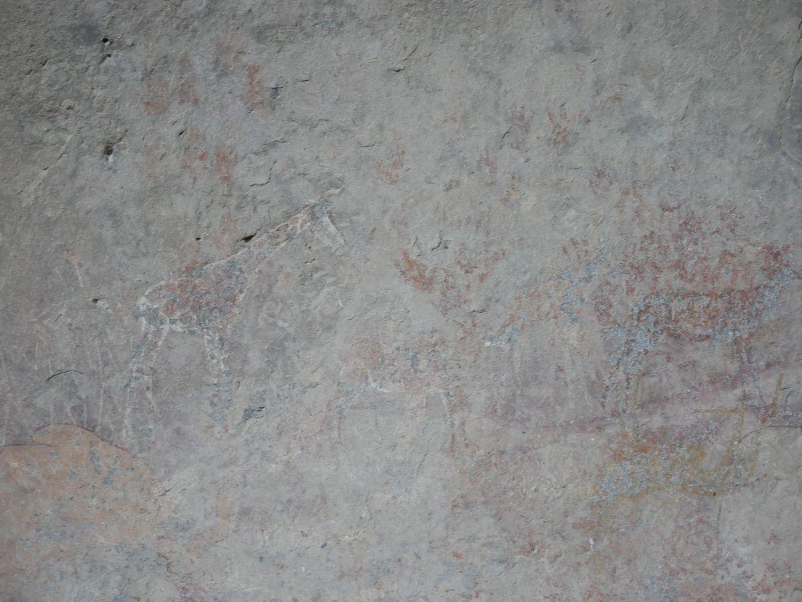
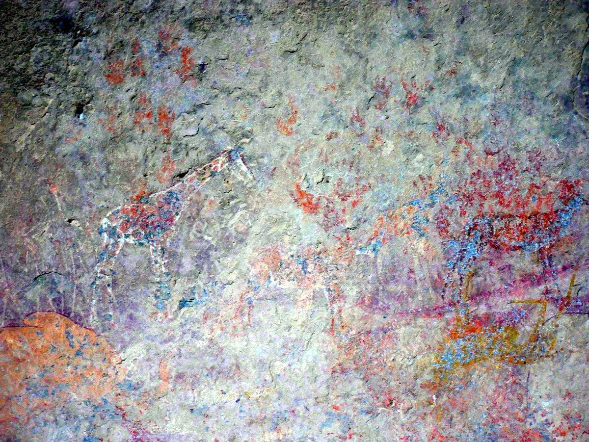
PhotoEnhanced↔
Centre of the main panel (photo by Katherine Daman, PhotoCircle). Drag across: left is the photo, right is the same pixels after a colour stretch that separates paint from rock. Left of centre: a giraffe outlined in white with red-brown patches. Right: a standing dark red antelope, with a yellow antelope painted upside down below it.
Short answer
Known as
Ticky's Cave. Botanists logged plants there under that name in May 2019, at a GPS point 2 m from yours.
Who
Hunter-gatherers, ancestors of today's San (often called Bushmen). The fine brushwork and the subjects match their tradition across Zimbabwe. The big white giraffe is probably theirs too, though farmers' later white art can't be ruled out from photos.
How old
Can't be dated from photos. The regional evidence allows roughly 10,000 to 1,000 years ago. One figure is painted over an older line, so the wall was painted at least twice, but not how far apart.
What
At least three giraffes (one big white two-colour one), antelope including one painted upside down and a small dark one, people with sharply bent knees, a line of tiny walkers, and a fish.
Meaning
Probably religious rather than a record of hunts. Researchers link this art to healers' trance dances, healing and rain, and the bent-kneed people, the upside-down (dying) antelope, the fish and the lines along the giraffes' backs all match trance-related themes.
Recorded?
Not in any public archaeology record; the only other rock art in print within 30 km is a one-line note about a neighbouring ranch. A Tree Society of Zimbabwe outing visited in October 2024 and wrote of "an elaborate painting of people and animals" with a giraffe. The national register isn't public, so ask the ranch whether it's registered.
Later visitors
Most of the 60 or so pieces piled on the floor are hand-made pottery, so Iron Age farming people used the shelter after the painters, or alongside the last of them.
Damage
Much of the painted rock skin has flaked away, taking parts of figures with it, and someone has scratched a small grid into the panel.
Catalogue
What's on the wall
Numbers match the circles on each enhanced image. Tap Photo to see the same patch unenhanced. High clear in the photos, Medium likely, Low a careful guess. Every call was cross-checked with a second reader and with Gemini.
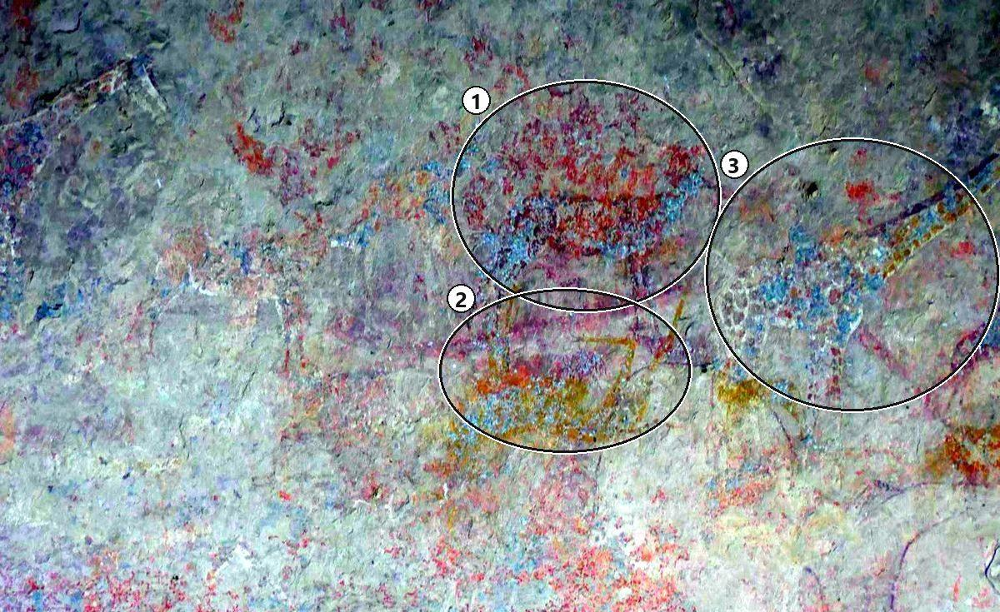
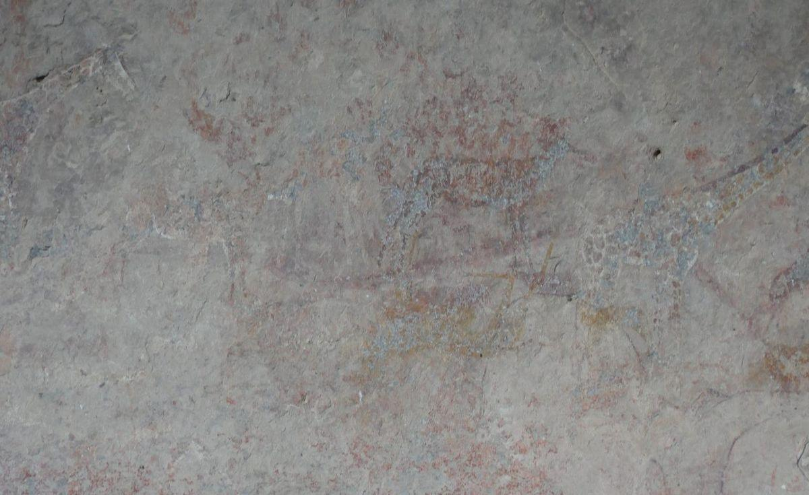
Main panel, centre · PhotoCircle photo by Katherine Daman
Giraffes and an upside-down antelope
Large antelope standing, facing right: level back, deep body, straight legs, painted solid dark red. The speckles are mineral crust over the paint. High antelope
Yellow ochre antelope painted upside down: back along the bottom, legs pointing up, one bent sharply at the joint. Its legs cross over the red antelope above. High
Giraffe with a patterned body and a long neck in red-brown patches, with a dark line down the back of the neck. High
The head and upper neck of the white-outlined giraffe from the slider at the top enter the upper-left corner of this frame. Below it, left of circles 1 and 2, is a faded small red antelope. Medium
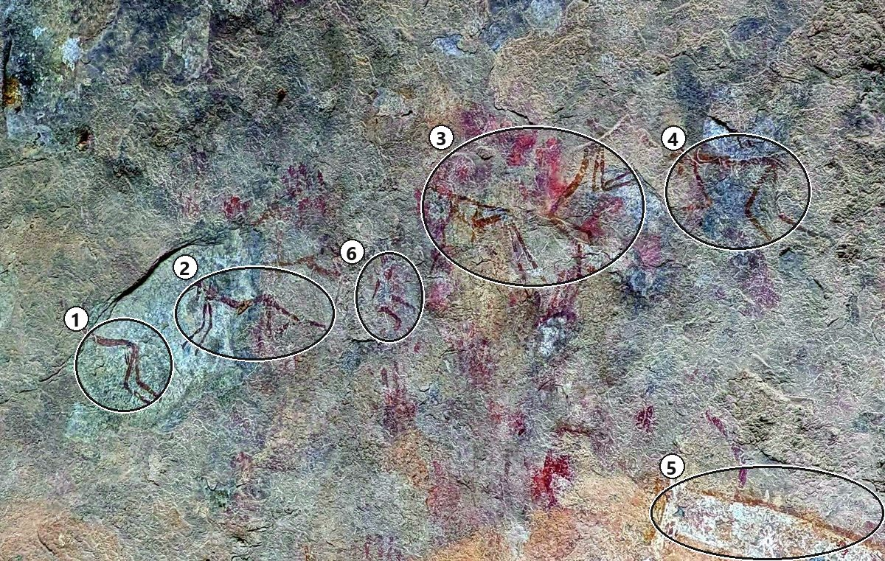
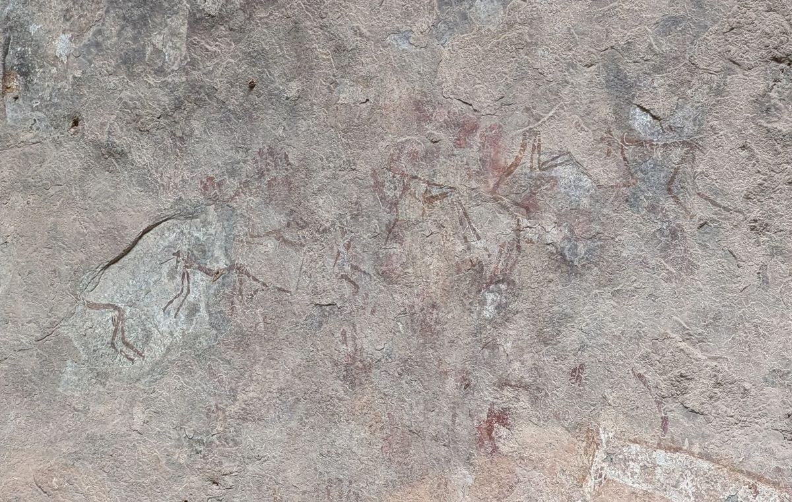
Upper wall, left of the white giraffe · photo 18
People with bent knees
A pair of human legs with sharply bent knees; the body above has flaked off. High
Long, thin person tilted far back or falling, arms hanging straight down, a short line from the head. High person
Several people with tightly flexed knees and paired lines that may be sticks. High people
Person bent forward at the waist with knees flexed; a thin long-legged antelope is the other possible reading. Medium
Upper end of the big white giraffe's neck (card 5). High
Small upright person with bent legs. Medium
Single brush strokes a few millimetres wide in dark red to maroon: the classic fine-line style.
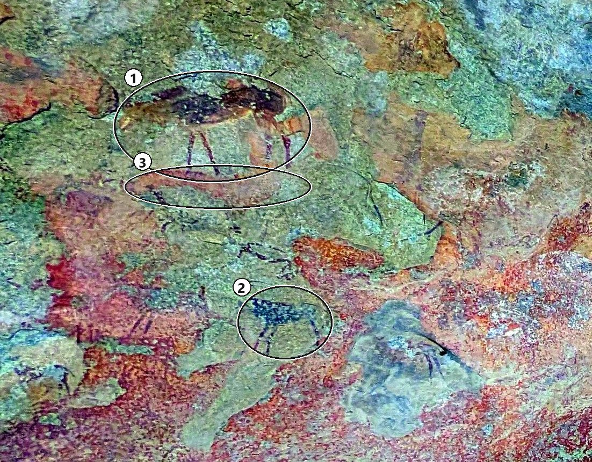
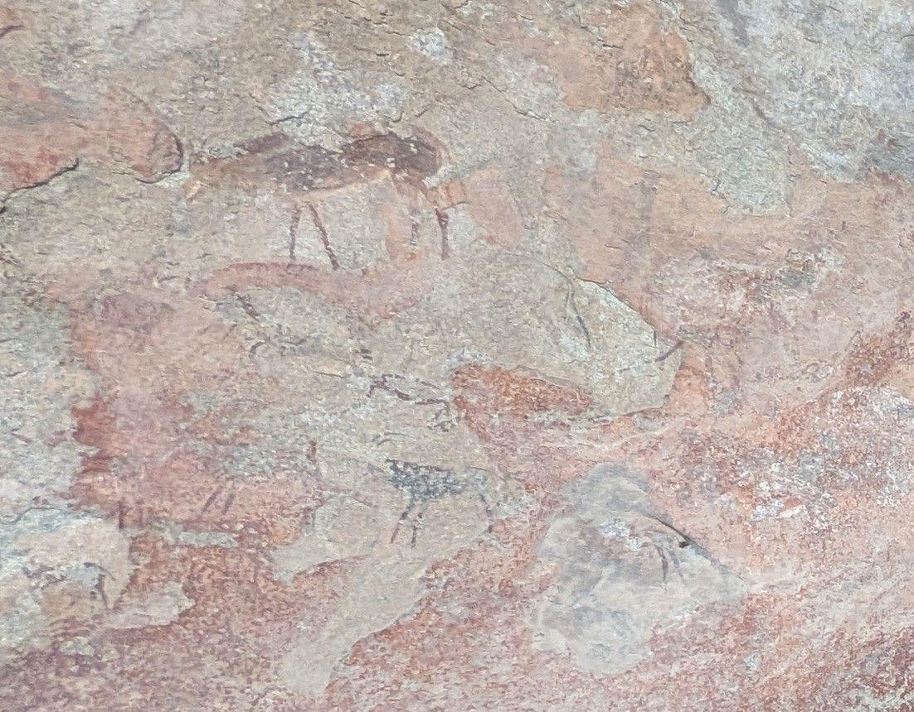
Main panel, left · photos 3 and 9
Two dark antelope over an older line
Large antelope facing left with its head lowered: deep chest and thin front legs on the left, rounded rump and thick thighs on the right. Heavy, eland-like build. The best-preserved animal on the wall. High antelope, Low eland
Small antelope facing left, two short ears or horns, grey-black body with maroon legs: black paint, or red that has darkened. In the Matobo Hills black is often used for wildebeest, and black doesn't mean late: black fine-line paintings in Botswana are dated to thousands of years ago. High
Curved orange-red band painted before the big antelope, whose front legs cross over it. So the wall was painted at least twice, though one overlap can't show whether minutes or thousands of years passed between. In the Matobo Hills, curved red lines with animals or people standing on them are read as paths to the other world. High painted first, Low that it was an animal
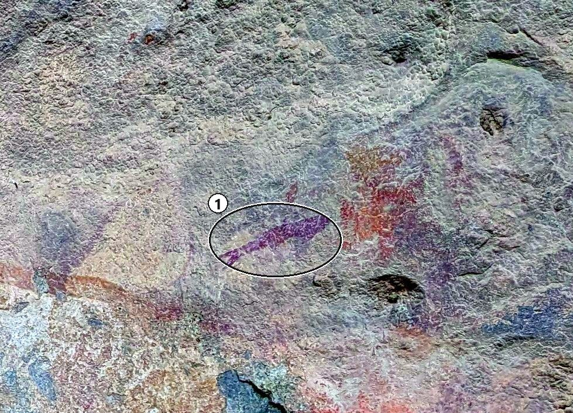
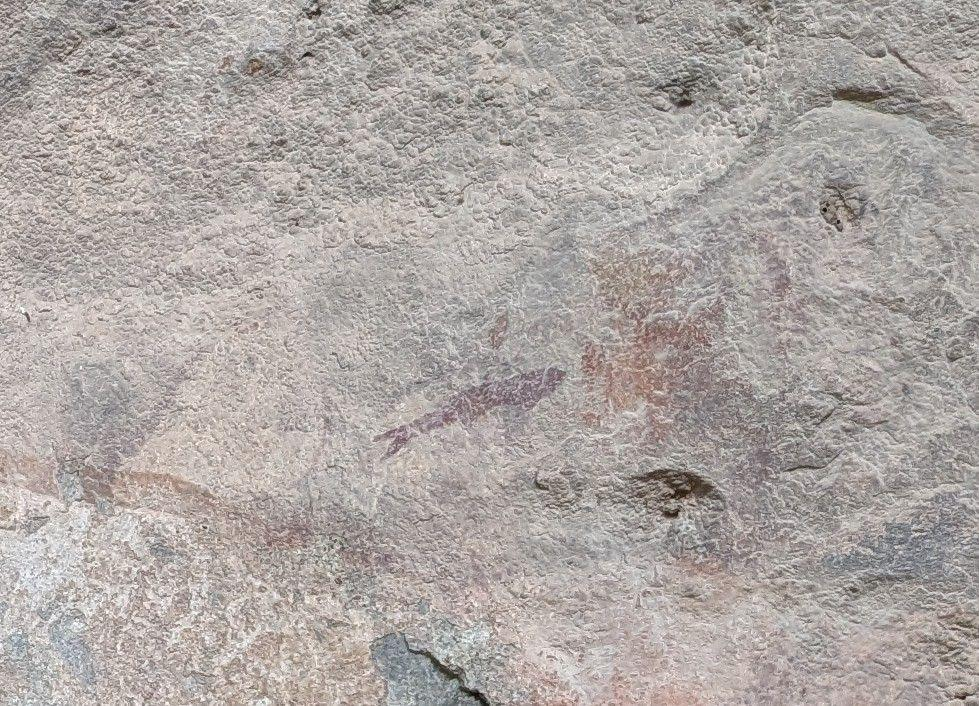
Just above the white giraffe's back · photo 18
A fish
Slim maroon fish with a narrow tail stalk and a sharply forked tail at lower left, swimming up to the right. High
The orange-red smudge beside it has no recognisable shape. Fish are "relatively common" in Zimbabwe's hunter-gatherer art, where they are read as symbols of deep trance and supernatural power.
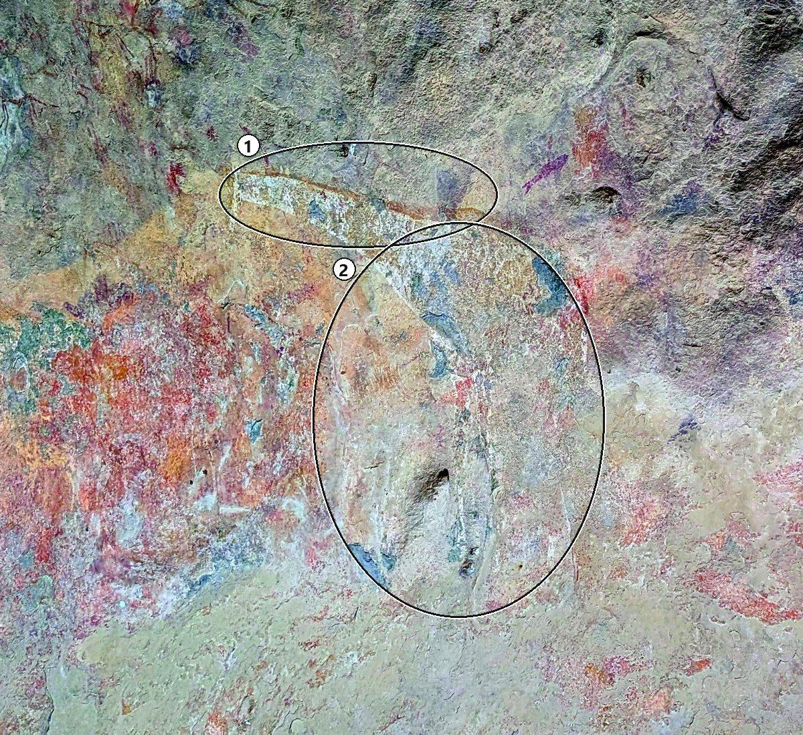
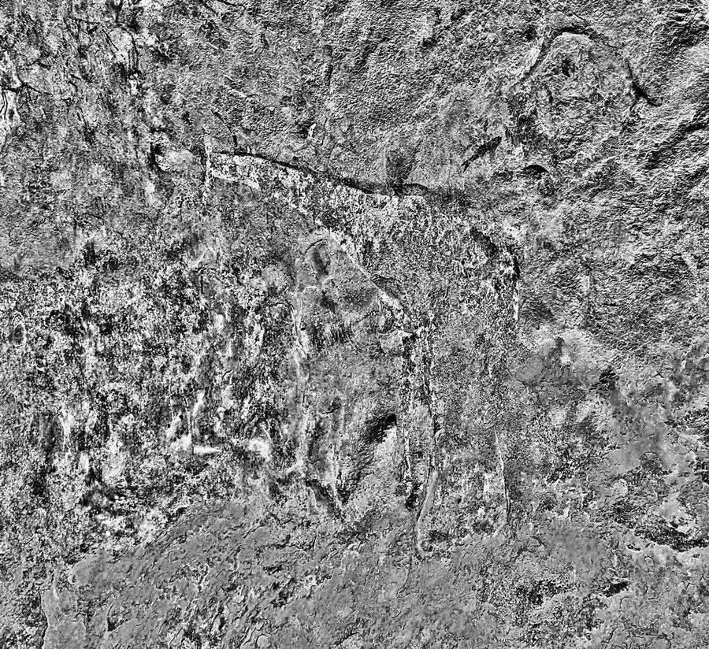
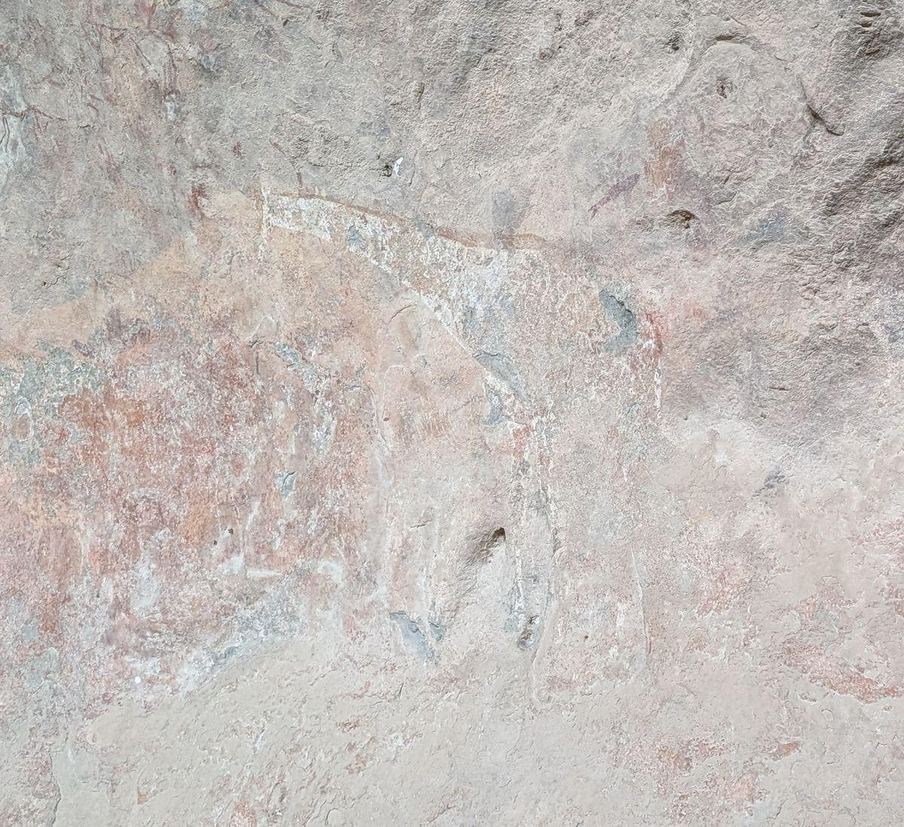
Main panel, right · photos 1, 2, 17, 18
The big white giraffe
Long neck rising to the upper left, with a red stripe along its top; the head end has faded. High
Deep white body, sloping back and long straight front legs, with a red line round the rump. The largest figure on the wall, facing the other way from the patterned giraffes. High
Crisp brushed edges rather than finger smears, and red lines that follow the outline, as on hunter-gatherer giraffes in the Matobo Hills, so it is most likely one two-colour hunter-gatherer giraffe. Farmers did sometimes copy or outline older paintings in white, so photos can't settle it. A test on site: farmers' white art always lies on top, so any fine-line paint over the white would prove it hunter-gatherer work. White paint weathers faster than red ochre, which is why it survives as a ghost.
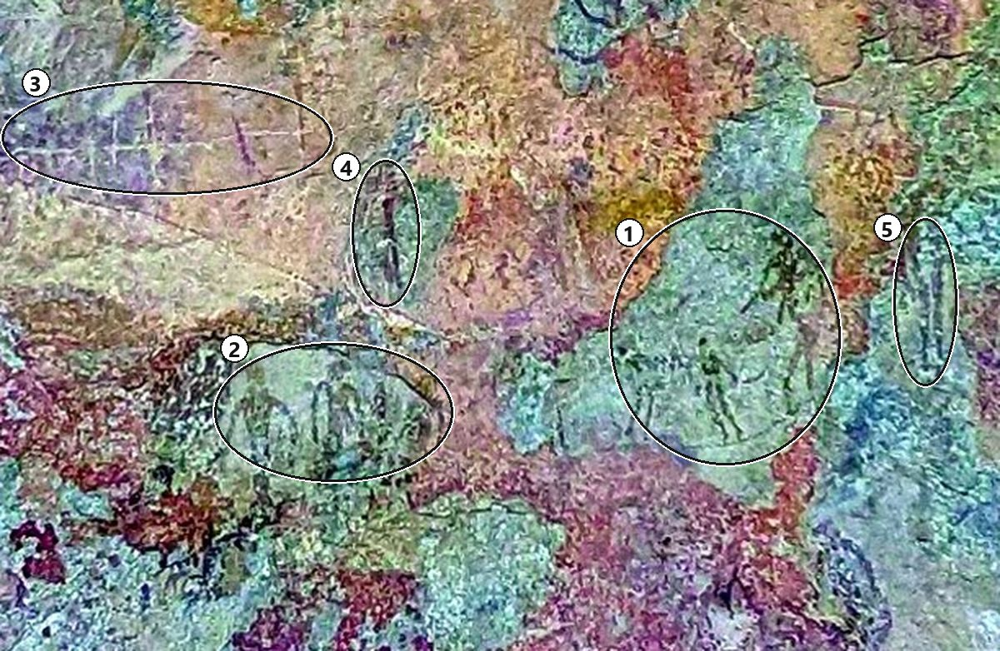
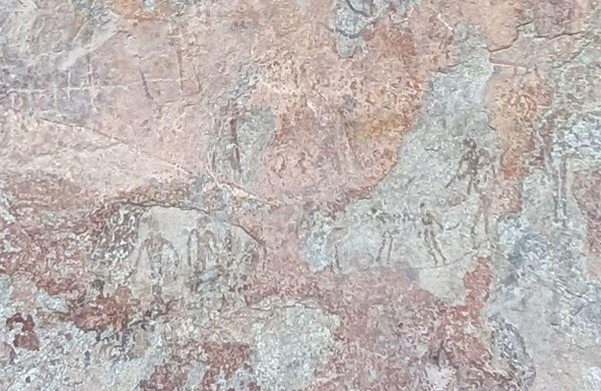
Lower left of the white giraffe · photo 5, zoomed 2x
Tiny people walking
Four tiny people walking left in dark fine line, one holding a curved bow or stick, the tallest with a thickened upper body (a bag or cloak?). High
Row of four or five narrow upside-down U loops: the simplified legs of a file of people, a small "formling" (a composite motif typical of Zimbabwe), or zebra hoofprints, the reading researchers give for small U shapes in Limpopo-Shashe shelters. A row of nine at Nottingham Estate, 92 km SSW, is the closest published match. Medium on the shape, Low on which
Ruler-straight pale lines forming a small grid, scratched through the rock's weathered skin after the paintings. Probably recent graffiti, though scratched grids are also an older engraving type in the Limpopo-Shashe area. High scratched
Slender upright person on a small grey patch. Medium
Long legs of another upright person. Medium
Files of walking people are common in this region, usually all men or all women, and most "appear simply to be walking". With a bow in hand, a hunting or travelling party is as likely as a ritual procession.
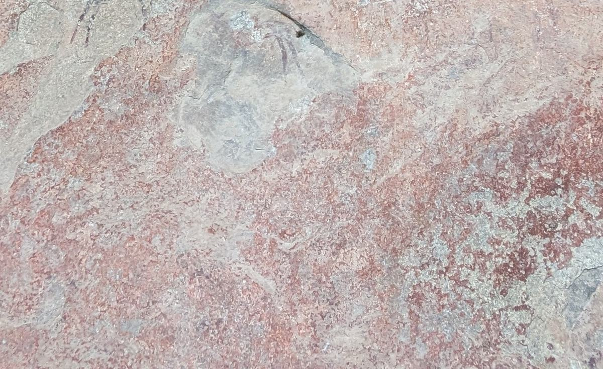
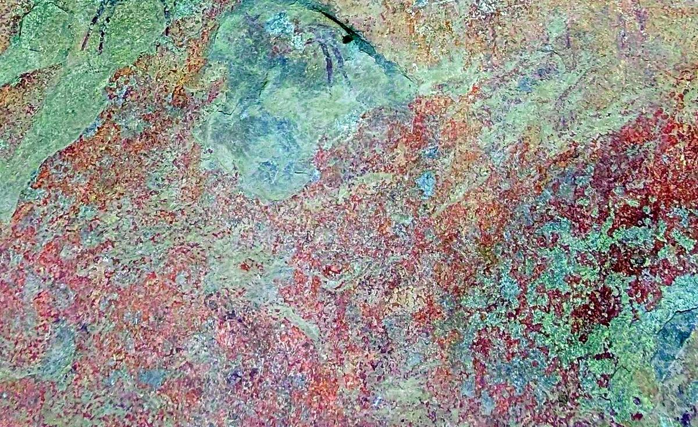
Middle band, whole length · photo 9
The broad red areas are rock, not paint
The paintings sit on smooth grey patches of the rock's weathered outer skin. Where that skin has flaked away in sheets, the rough, iron-rich rock underneath shows red, and the colour stretch makes it look like paint. The grey patches stand slightly higher with stepped edges, and painted lines stop exactly where the skin broke off, so the flaking happened after the paintings and took parts of them with it. High
Small traces of an old red wash along the edges can't be ruled out from photos alone.
Dating
How old is it?
No painting on a shelter wall in Zimbabwe has a published direct date. The oldest directly dated rock paintings in southern Africa (from Botswana, Lesotho and South Africa) are about 5,500 years old, though that date has a wide error and most direct dates are about 2,000 years old or younger. So this wall can't be dated from photos. The regional evidence allows roughly 10,000 to 1,000 years ago, and the wall was painted at least twice, though one overlap can't show how far apart. One clue to look for: near the Limpopo, sheep in fine-line paintings mark the last 2,000 years or so, and none was seen here.
1991 to today
Ranch and conservancy
Cattle ranches here formed Bubiana Conservancy in 1991. Your visit: Tue Nov 17, 2026.
about AD 400 to 1820
Farming peoples (Iron Age) pottery here
Early Iron Age villages from about AD 400 to 600, Zhizo AD 700 to 1000, Leopard's Kopje about AD 900 to 1400, Mapungubwe AD 1220 to 1300 and the Khami period AD 1450 to 1820. In the 1200s Mapungubwe's people traced gold to the Gwanda and West Nicholson belt, northwest of here. The nearest excavated site, Chumnungwa, a stone-walled town 37 km NNW near the upper Bubi River, dates to about AD 1300 to 1630.
about 2,000 years ago
Herders arrive
Khoekhoe herders reached the central Limpopo basin around 2,000 years ago and are credited with finger-painted geometric art and handprints. None was identified on this wall. Thin Bambata pottery of AD 150 to 350 also turns up in hunter-gatherer shelters; who made it is debated.
10,000 to about 1,000 years ago
Hunter-gatherer painters paintings here
Painted wall flakes in dated Matobo cave layers show painting by about 10,000 years ago, and ochre crayons go back about 13,000. Along the Limpopo some shelters lost their hunter-gatherer users around 1,000 years ago as farmers spread, while others stayed in use until about 700 years ago.
Newest on top, like an excavation wall. The paintings fall somewhere in the bottom layer, painted at least twice; the pottery comes later.
Interpretation
What it might mean
Religion, not hunting diaries
The widely accepted reading is that much of this art comes from the religious life of healers, who entered trance in dances to heal the sick and bring rain. Zimbabwe's national museums describe the country's art as closely linked to this and to ideas of supernatural potency. The most carefully painted animals, such as giraffe and kudu, are rare in the food remains dug up in Matobo shelters, so the art isn't a hunting record. How far the trance reading, built on San accounts from further south, fits Zimbabwe's older art is still debated.
Bent knees and bent backs
People bent forward at the waist, often with arms hanging or held back, and people with sharply flexed knees are standard postures of the San healing dance, in Zimbabwe as elsewhere. Posture alone doesn't prove a dance; researchers look for several figures bending together, as some here do.
The upside-down antelope
Animals painted upside down are usually read as dead or dying, and death is a core San metaphor for a healer going into deep trance. A real kill is the plainer reading: in the Matobo Hills one upside-down buffalo is shown being cut up by hunters.
Why giraffes
Giraffe and kudu dominate Jahunda, a surveyed painted site south of Gwanda, about 90 km away, and Zimbabwe's only naturalistic engraving of a whole animal is a giraffe over 2 m long at Mtetengwe, 77 km south. Ju/'hoan San healers have a set of "giraffe songs", and giraffes may have been tied to rain. A red line along the back of large animals, like the stripes on these giraffes, counts among trance-related motifs in this region.
The fish
Fish are "relatively common" in Zimbabwe's hunter-gatherer art. Researchers read them as symbols of the underwater feeling of deep trance, rain-making and supernatural power. Fish are painted in the Limpopo-Shashe area too. The species can't be told from a forked tail: Zimbabwe's two painted electric fish (mormyrids) were recognised by their snouts.
The white giraffe
Thick finger-painted white is the mark of later farmers' art, and farmers sometimes copied or outlined older paintings. But a giraffe outlined in red with a white or yellow body is a hunter-gatherer convention in the Matobo Hills, and this one's edges look brushed, so it leans hunter-gatherer. Farmers' art always lies on top, so fine-line paint over the white would settle it. Giraffe was also the main subject of the earlier, boys' initiation phase of Northern Sotho farmers' art across the Limpopo.
Shelter floor
What's on the floor
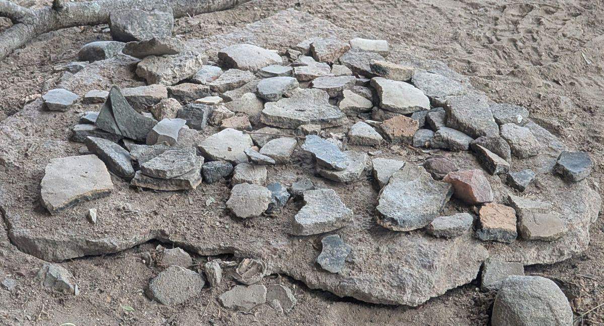
About 60 pieces piled on a flat rock by earlier visitors. Around 50 are hand-made, grit-tempered potsherds with dark cores from open bonfire firing and smooth or polished faces; the rest are stones. No decoration or rim shows, so no culture can be named. At about 1 cm thick they are thicker than most Bambata ware from hunter-gatherer shelters, so farmers' pottery is more likely. A rounded cobble beside the pile may be a grinding stone.
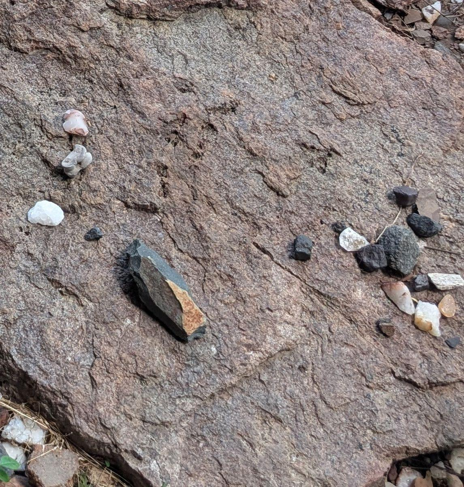
Stone on the path. A dark struck flake, and quartz and chalcedony chips that look like tool-making debris; quartz was the main tool stone of Stone Age hunter-gatherers in the Matobo Hills. Among the dark lumps: a natural dark pebble, a faceted nodule that looks like haematite (iron ore, a source of red pigment), and two pitted lumps that could be ironstone or smelting slag.
Next steps
Is it recorded? What can be done
No archaeology record of this shelter is public. The only other rock art in print within 30 km is a 1997 tourism study's note of San rock art on Barberton, another Bubiana ranch, whose old airstrip is about 15 km NNE. The shelter itself turns up in two natural-history records:
May 2019: botanists logged plants at "Ticky's cave, Rocky Glen Ranch", a granite kopje at 810 m, at a GPS point 2 m from yours.
October 2024: a Tree Society of Zimbabwe outing logged plants at "Tickey's Cave" about 75 m away, and its trip report reads: "a cave with rock paintings. It was one of the bigger types with an elaborate painting of people and animals. One vague picture seemed to depict a giraffe. Opposite the cave and hiding it was a huge perfectly shaped round rock."
Your group's photos from a few minutes after the shelter were taken on top of a bare, rounded rock with an all-round view, which fits that description. The national register (about 8,450 site records, now being digitised) isn't public, so the shelter may still be on file there. The ranch shows it to visitors, and its riding trips advertise "hikes to view ancient cave paintings", so the owners know the site well.
Ask the ranch whether it's registered. Under the National Museums and Monuments Act, a shelter used before 1890 is an ancient monument, its paintings and floor finds are protected relics, and the landowner and finder must report a site in writing. Reporting only puts the site on record. Making a private site a national monument needs at least a month's written notice to the owner, who can object, and taking it over needs the President's authority and compensation.
Where to send photos: Natural History Museum of Zimbabwe, Bulawayo, +263 29 2250 045, natmuse@netconnect.co.zw, or the national office, natmus@nmmz.co.zw. The museum has an archaeology department covering Matabeleland.
Ask the museum to check map sheet 2129 B4 (Taula), and 2129 B2 next to it, for an existing site card; site numbers follow the map sheets. Also ask whether C. K. Cooke's 1960 report on archaeological sites in the Bubye and Limpopo valleys covers this area. It isn't online. The email below asks both.
Who studies this: the University of Zimbabwe (Dr Ancila Nhamo, Matobo rock art), the MATOBART team (national museums with Toulouse), the Wits Rock Art Research Institute in Johannesburg, and Rob Burrett, a Bulawayo rock art recorder who works with the museums.
Leave everything in place. Moving, piling or removing sherds, stone tools or slag without the museums' written consent is an offence, and it loses where each piece lay. Don't wet, touch, trace or rub the paintings, and keep dust down. Flash photos are fine.
Keep the exact spot off social media. Unprotected sites get damaged when their locations spread.
Better photos next time: straight-on, with a ruler or scale card in frame, plus a few in low side light. Worth close-ups: the white giraffe's edges (brush or finger?) and any fine lines over its white, the spot where the antelope's legs cross the red band, and below the row of loops for faded shapes. DStretch, the method used here, is also sold as phone apps (iDStretch, aDStretch).
Ready-to-send email to the museum
To: natmuse@netconnect.co.zw
Cc: natmus@nmmz.co.zw
Subject: Painted rock shelter on Rocky Glen Ranch, Bubiana: is it on the site register?
Dear Archaeology Department,
I'm writing from Rocky Glen Ranch in Bubiana Conservancy, Gwanda District. There is a painted rock shelter on the ranch, known locally as Ticky's Cave. We know of no archaeological record of it and would like to make sure it is on file.
Where it is:
- 21°15'23.2"S 29°50'26.2"E (-21.25643, 29.84067), on a granite kopje at about 810 m
- About 2 km north of the Bubiana River gorge and 5 km west of the Bubi River
- Map sheet 2129 B4 (Taula), about 700 m south of the edge of 2129 B2
What's there: fine-line paintings, mostly dark red and maroon, of at least three giraffes (one a large white giraffe with red lines along its outline), antelope (one painted upside down), people with sharply bent knees, a file of small walking figures and a fish. Much of the painted rock skin has flaked away, and someone has scratched a small grid into the panel. A pile of about 60 pieces on the floor is mostly hand-made pottery, with quartz chips, a stone flake and possibly slag.
Could you tell us:
1. Is the shelter already on the national site register? A card may be filed under 2129 B4 or 2129 B2. If so, what is its site number and what is on file?
2. Does C. K. Cooke's 1960 report on sites in the Bubye and Limpopo valleys (South African Archaeological Bulletin 15) include it?
3. If it isn't recorded, please treat this email as our written report of the site, and let us know what else you need.
We can send photos, including colour-enhanced versions that bring out the faded figures, and would welcome advice on protecting the site, or a visit if anyone from the department is in the area.
Kind regards,
[Name]
Rocky Glen Ranch, Bubiana Conservancy
[Phone]
Location
Where it sits
On Rocky Glen Ranch in Bubiana Conservancy, Gwanda District, Matabeleland South: botanists' GPS records label this exact spot "Ticky's cave, Rocky Glen Ranch". A vegetation survey map (fieldwork 2001, published 2007) puts it where the Rocky Glen 1, Rocky Glen 2 and Boulder Creek parcels meet; allow 1 to 2 km for that detail. The rock is granitic gneiss of the Limpopo Belt, which looks like granite.
~2 kmN of the Bubiana River gorge
5 kmW of the Bubi River
53 kmESE of West Nicholson
94 kmESE of Gwanda
~107 kmN of Beitbridge
~120 kmNNE of Mapungubwe Hill (South Africa)
~160 kmESE of the central Matobo Hills
Straight-line distances, rounded. Your photos 1 to 6 carry a rough phone location about 25 km away ("Makado", a ranch and roadside stop on the Bulawayo to Beitbridge road); photos 7 onward have a GPS fix that matches 21°15'23.2"S 29°50'26.2"E.
How this was checked
Your 15 photos and 5 videos plus 34 PhotoCircle photos by Katherine Daman were each run through a decorrelation stretch, the same method as the DStretch tool rock art researchers use. It exaggerates small colour differences, so iron-oxide colour turns pink or red and grey rock turns green. Figures were read one by one at full resolution, then read again separately by a second reader. Every figure call and every fact on this page then went through two rounds with Gemini 4 at high reasoning, which opened the sources and the photos; disagreements were argued out with close-ups. Gemini changed its mind on the potsherds and the scratched grid; this page changed on the red areas, the upside-down antelope, the bent-kneed people and which way the big antelope faces. Two Gemini Deep Research reports then added leads, each checked against its own source before use; that is how the botanical records naming Ticky's Cave turned up. Nothing said in the videos was used.